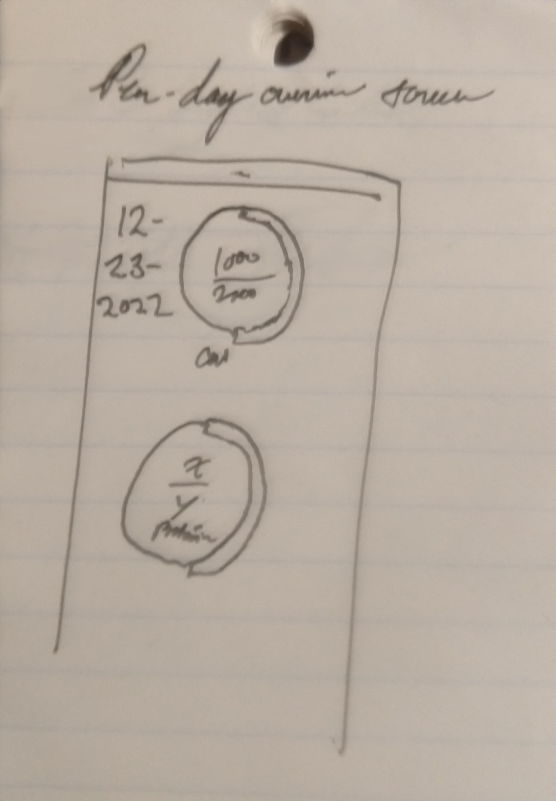
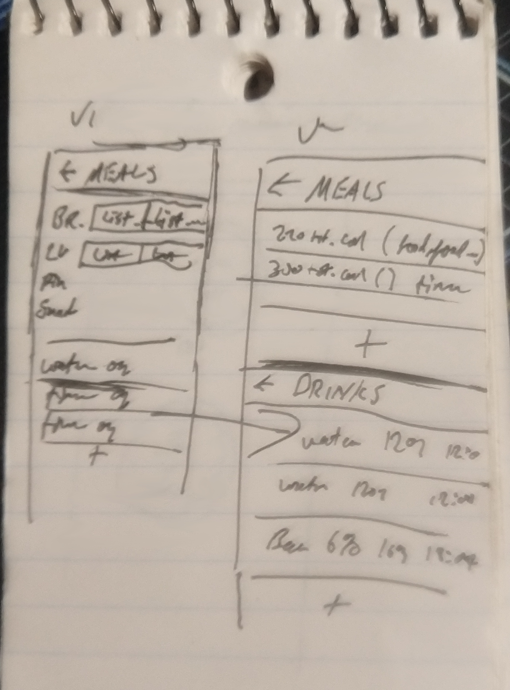

Since I have a blog, and since I write software, I figured I should finally combine the two.
Wow! What uncharted waters!
In all seriousness though, a friend of mine asked me months ago to write a diet app for him that would track more than just calories. He wanted an app that could track his protein intake, carbs, sugars, and loads of other stuff and do fancy stuff like chart it over time.
The very next day he was worried he was getting obsessive and asked me not to even start. Honestly, I hadn't done any Android app development since college, and that was even pre-Kotlin, so I was pretty crushed that he didn't want me to write this anymore.
Fast forward to the present day, and now he's run into a case where he wants to be able to adjust his diet. This time, he wants to make small, incremental changes to a ratio between two different components over a long period of time. This means that he wants an app that will let him set goals to zero in on certain parts of his diet, without really worrying about calories first.
Original App Design
Now that the background is out of the way, here's the original design for the app that I had written down in my notebook at the bar. This is the first design, in its concept phase. Pretty much everything not in these two notebook pages was all in my head.

This page is what I called the "per-day overview screen". At the time, I used calories and protein as an example for the two displays. I didn't really have any sense for what amount of protein is even healthy (since I haven't ever tracked it myself) so I just subbed in X and Y so I could demo the layout in my head.
This design makes a lot of sense if you have a fixed target to reach and you want to reach exactly that target (or possibly more). However, if you're trying to cut back on something, you'll probably be thinking something along the lines of 'I want to get within 10% of this goal' rather than 'I want to get exactly x calories today, not one more, not one less'. As a result, the application I'm building this time around probably won't use this.

This page shows two different versions of the overview screen. My handwriting for the header for each version is basically illegible, but the intent was two different options for layout.
The first one is a condensed view, showing an overview of breakfast, lunch, dinner, and snack foods, then water amounts in ounces, and additional drinks below. I didn't really show much more than this, since it would essentially just be a form to fill out to add anything to the list. I realized pretty quickly that, while this would work great for large screens or some simple overview text, to actually display contents of a category like this would probably not work terribly well. My intent was to maybe keep some form of this around for V2 as a tablet UI, I'd probably need another design that scrolls vertically more to fit the phone better.
So, I made V~... I mean V2.
I didn't actually show the menu to pick between these two screens, but I split meals and drinks into separate categories. These would make up the main two displays, showing all of the individual meals and leaning on the home screen from the last page in my notebook to show all of the overall stats. Tapping on any meal in the list would show full details that you could edit as needed, with a nice little + menu item at the bottom to add another food item or drink item.
What I Think This Would Be Good For
So this was (in my opinion at the time) a pretty good design. The idea would be you would measure everything in your diet, and then set goals for each component.
Why I Won't Make This
Unfortunately, my friend's doctor thought otherwise, suggesting that this level of micromanagement might not be healthy. Who knew!?
In all reality, this made perfect sense to me. Even if I had made this and was very proud of it, I had no intention of actually using it myself. There's no way I'd find an excuse for that. Furthermore, somebody else has already made something just like this, and now that my friend is using that instead, the weaknesses are becoming abundantly clear.
New Concept
I'm still in the process of formalizing this in my head, so this post is really only step 0 in this process, hence why the post is called devlog0 in Pelican. You can see it up there in the URL bar!
The basic idea is, rather than just a diet app I would never use, I wanted something more generic that could actually impact someone's habits instead. This means not just food habits, but anything. I've been trying to get to bed and wake up earlier, since most people don't follow my schedule of 4AM to 11AM sleep, including Org Mode and thus my own task list.
I hinted at this earlier, too, but I also want this new app to be able to include an intended margin for error. This means it needs to be able to treat 80% of the goal or 120% as 'goal met' when the accuracy is set to 20%. That's a pretty generous margin for a lot of things, but for certain habits having the flexibility to go that far could mean the difference between very gradually changing a habit, and relapsing into old (or worse) behavior. Ideally, the program would see your actual result from the previous time period and adjust expectations for the next time period based on that.
Sleep Example
So, to use a more concrete example, if I want to push my sleep schedule back an hour every week give or take 20%, I would be meeting my goal if I was 12 minutes off, so if at the end of the week I got to bed at 3:12 or 2:48 rather than 3:00 I'd still be good to go. Furthermore, the app would start me at 3:12 for the next week rather than 3:00 if I fell short of the goal. This would let me adjust how quickly I adapt to this change somewhat more naturally and take the time I need to actually change my habits.
Operationally, the input from me would be when I get to bed. So, for example, if I was about to turn off the lights, I would note down the time in the app, shut off the lights, and climb into bed. The app would then come up with what time I should get to bed the next night and present it to me when I wake up. If I wanted to get fancy, maybe I could even have it tell me when to set my alarm for to support this change, though that might be a bit ambitious for a generic system.
Candy Vs. Fruit Example
The other style is ratio-based. For example, someone wants to still treat themself for getting something done, and historically they've used candy. They don't think they can just hard switch to fruit, so instead they tell the app they want to get to 0% candy and 100% fruit in 2 months or so. They tell it that they want to have a 20% error margin like in the last example. As the day goes on, they tell the app each time they use a candy and each time they use an apple or a raspberry or something, and the app comes up with a ratio between the two and keeps track of how close they are to their target ratio throughout the day. It will tell them to take things slow and keep mostly candy at first, weaning them off of it slowly so that they don't have the urge to return to the candy but they don't suffer sugar withdrawal.
To be clear, this example doesn't have anything to do with my friend, though the idea of ratio changes was suggested by him.
I also personally don't really eat any candy, but I needed a ratio example that seemed plausible.
How I'm Going to Develop This App
This is new to me. I'm not used to developing things using a blog as my motivation. That said, I've always told people that I need to work with other people to do my best work. This always kept me accountable for my work, and made sure that I was meeting targets and goals as the project progressed, rather than just falling off the back of my schedule before I got off the ground with the idea. However, I recently ran into an article by Ben Stokes via diff.blog called "Why Developers Are Building So Many Side Projects". To be clear, I had never heard about Ben Stokes before, nor had I heard about diff.blog until their bot starred this blog on GitHub, so I don't really know enough to endorse either of them just yet (though Stokes seems to have good ideas about websites and diff.blog seems well-meaning as far as I can tell). He mentioned Ben Awad, who had been posting videos to YouTube (and other platforms) about his side projects, blurring the lines somewhat between "creator" and "developer". As a musician and producer as well as a developer, I can relate to this idea.
What all of this inspired me to do is use the blog like I would use a second member of a software team. I've gotten pretty good at posting here about once every other day or so, which was my goal when I transitioned to Pelican, so I figured I should try to leverage that to keep me motivated to work on this project. If I keep posting what I'm doing say, every other blog post, maybe (just maybe) I might be able to see this through to the end on my own.
That's not to say I can't finish a project if I have an immediate need for it. I have way, way more unpublished code than published, in working, polished form that I use for random things. I edit virtual choir music using Kdenlive and Ardour on my desktop (and sometimes one of my laptops), so I have a host of scripts in a virtual environment to make that easier and faster. What stops me from publishing it all is it's so very dependent on my own workflow, and won't adapt to somebody else's easily. Feel free to email me (email on my GitLab and GitHub pages) if you disagree, and maybe I'll post some of it along with operating instructions. It's well within my ability to polish this stuff up for others instead of just myself, and envy-scripts is something I published for exactly this reason (even if it's not really arguably "finished" as is right now).
So, watch for a few headers in upcoming devlog posts:
- Progress So Far
- Design Changes
- Still Left to Do
These three headers should give an idea about how close I am to reaching my goal of making this habit tracking idea take shape. Who knows, maybe it'll work and I'll do this for other projects! On the other hand, it might only last so long before I try to bring someone else on to the project. I leave room for that to happen anyhow, but the goal is for the blog to be my partner in crime. If you're reading this, you're in on it! Thanks!
Progress So Far
So I've got a concept. Not only do I have a concept for the app, I have a concept for how I'll do my roadmaps into the future, and maybe I'll be able to launch a whole bunch of neat little utilities this way, leveraging very open development.
Design Changes
I haven't started yet, but I said this header would be here so here it is!
Still Left to Do
I need to lay out my steps to actually execute on this idea. Even if someone with more resources steals it tomorrow, I'm still going to make my own just to see how far I take it. I'm probably going to start with the backend design, make a working MVP in the Linux Shell or something to get an idea for what's going on behind the scenes, then proceed to teach myself Kotlin so I can get this into an Android app.
So, stay tuned for next time, at which point (with any luck) I'll have some designs to share, and maybe even a working prototype. See you there!